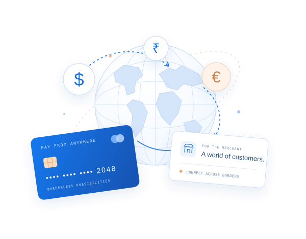

Small details.
Connected
experiences.
My chapter at PayGlocal, working on AI workflows, the company website, and KYC platform development at a product-based fintech startup.
Explore my work ↓

01 / THE EXPERIENCE
Where product thinking
meets everyday operations.
At PayGlocal, I gained hands-on experience across data management, website-related projects, and marketing operations. I explored HubSpot CRM data, lead tracking, and attribution while helping improve internal workflows.
I also contributed to an interactive merchant onboarding eBook and the documentation page, bringing content, UI, branding, and user experience into the same conversation.
02 / KEY AREAS OF WORK
A role with room to explore.
01Data & CRMMaking the information useful.+
Explored and managed HubSpot CRM data, worked with lead tracking and attribution, and documented workflows to make internal processes easier to understand.
02Website & contentConnecting content to the experience.+
Contributed to website-related improvements, SEO, and content coordination, with attention to how information is presented and experienced.
03Merchant onboardingHelping the first steps feel clearer.+
Contributed to the design and development of an interactive merchant onboarding eBook and checklist, focusing on content, branding, and usability.
04DocumentationA thoughtful home for useful information.+
Worked on the documentation page, contributing to content, UI, branding, and the overall user experience.
05Marketing operationsUnderstanding what happens behind the form.+
Worked on forms and UTM tracking, researched lead scoring, and explored workflow optimisation across marketing operations.
03 / A CLOSER LOOK
MERCHANT ONBOARDINGA useful guide.
A more thoughtful
first impression.
I contributed to an interactive onboarding eBook and checklist designed around the merchant experience. The work brought together content, design, branding, and user experience.
The original deliverable is not shown here. The illustration is a visual interpretation of the work area.
04 / TOOLS & TECHNOLOGIES
A toolkit across disciplines.
HubSpot
CRM & marketing automation
Google Sheets
Data management
Canva
Content & visual design
Figma / design tools
UI & design exploration
SEO
Website & content coordination
05 / WHAT I’M TAKING FORWARD
Seeing the connections.
Owning the details.
Working at PayGlocal gave me exposure to the intersection of technology, fintech products, data, and user experience. Contributing across different parts of the business helped me take ownership of tasks and understand how technology and operations support a growing product-based startup.
Different perspectives. A wider lens.
Every chapter adds perspective.
Data, design, and the small details that connect a product to its people.
Revisit the Adobe chapter ↗